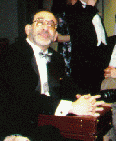

In Memoriam
The New England LARPing community is growing and thriving, with an enthusiastic and diverse population. We celebrate that population, and mourn the friends that we've lost.
Donald Foley: 2011
Dean Edgell: 2007
Brett Bakke: 2005
Robert Sacks: 2000
I GMed for Robert, and he could be a difficult player. He was going to take the character in the direction he saw fit, regardless of how that character was written. It made me a little crazy as a GM. Despite this, Robert was always prepared and ready to go, an intense LARPer, appreciative of a well-written game, and a supporter of Intercon. When we announced a new, northern Intercon, he was right behind us, and he told everyone to come play with us. We were new, he was excited, and he helped us when we needed it most. As a new con-chair, starting a new convention, I really appreciated his enthusiasm.
At Intercon the Thirteenth, Robert signed up for the Build Your Own Game, which turned into Miskatonic Regional Elementary. He played the teacher of the class, driving the game, and it was a transcendent experience. It was like the role he was born to play; he made it his own and he made the game really come alive as a result. It was a brilliant moment that everyone in the game appreciated. We all wanted to play more with Robert as a result.
And then he was gone too soon.
Jeff Diewald, GM of many games, Con Chair for Intercon the Thirteenth, assistant facilitator for Miskatonic Regional Elementary.